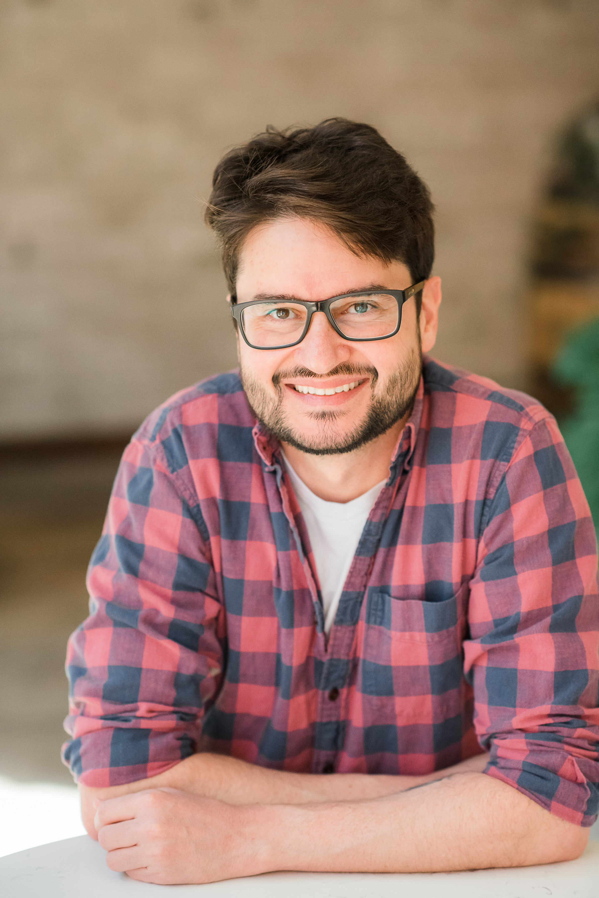

Levi Lelis
Assistant Professor, Canada CIFAR AI Chair with Amii
I am an Assistant Professor in the Department of Computing Science at the University of Alberta, Canada. Previously, I was a Professor for six years at the beautiful Universidade Federal de Viçosa, Brazil.
My research is dedicated to the development of principled algorithms to solve combinatorial search problems. We are currently focused on combinatorial search problems arising from the search for programmatic representations to sequential decision-making problems (e.g., computer programs encoding policies for solving reinforcement learning problems). I believe that the most promising path to creating agents that learn continually, efficiently, and safely is to represent the agents' knowledge programmatically. While programmatic representations offer many advantages, including modularity and reusability, they present a significant challenge: the need to search over large, non-differentiable spaces not suited for gradient descent methods. Addressing this challenge is the current focus of my work.
Opportunities
Would you like to join my group? I am looking for motivated graduate students interested in programmatic representations for solving sequential decision-making problems. If you're interested in joining my group, contact me by email with a description of your background and why you are interested in programmatic representations for solving sequential decision-making problems.
If you are looking for recent representative papers from our group to read before contacting me, please take a look at our recent work on using programmatic representationg for solving reinforcement learning problems: Dec-Options, Searching in Syntax Spaces, and Searching in Semantic Spaces.
The following talk, presented at IPAM's Naturalistic Approaches to Artificial Intelligence Workshop, highlights recent work we've done on programmatic representations for sequential decision-making.